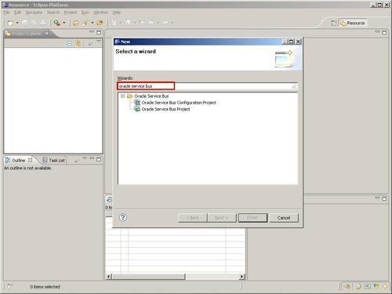
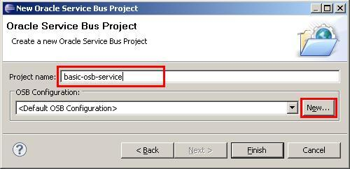

In order to develop on the Oracle Service Bus, an OSB project needs to be available. This recipe will show how such an empty OSB project can be created. Such a project can either be created through the web-based OSB console or through the more developer-friendly Eclipse OEPE. Eclipse OEPE is an Eclipse IDE with Oracle Enterprise Plugin for Eclipse (OEPE) and the OSB plugin installed.
In Eclipse OEPE, perform the following steps:
Oracle Service Bus in the Wizards tree list:
basic-osb-service into the Project name field:
osb-cookbook-configuration into the Configuration name field. OSB project.We have now created an empty OSB project inside our Eclipse workspace.
An OSB project created through Eclipse OEPE is just a folder created below the location of the workspace. Visually, Eclipse OEPE shows it wrapped inside the osb-cookbook-configuration OSB configuration, but they are really both on the same level, just a subfolder of the workspace folder.
The project contains a .project file and a .settings folder like any Eclipse project. These files hold the necessary meta information about the project. An OSB project has the special Oracle Service Bus facet assigned.
This empty project can now be used to create the different OSB artifacts necessary for an OSB service. They can either be placed directly inside the project folder or a subfolder structure can be created in order to organize the OSB project. How to create a folder structure will be shown in the next recipe, Defining a folder structure for the OSB project.
A new OSB project can also be created through the OSB console. The main difference to the approach shown before is that, through the OSB console we directly work on a running Oracle Service Bus instance. When using Eclipse OEPE, the project is stored in the Eclipse workspace and needs to be later deployed to an OSB instance. See the next recipe, to learn how to create a folder structure for holding the different OSB artifacts.